Collective Biographies of WomenAn Annotated Bibliography
Alison Booth
66.
Bearne, Catherine M. A Royal Quartette. London: Unwin, 1908. New York: Brentano, 1909.
Search OCLC WorldCat for this title.
Search Google Books for this title.
Bearne, Catherine M. A Royal Quartette. London: Unwin, 1908. New York: Brentano, 1909.
TOC: Marie Adélaïde de Savoie, Duchess of Burgundy; Madame Adélaïde, Daughter of Louis XV; Maria Luisa, Infanta of Spain, Daughter of Carlos IV., Wife of Carlo Ludovico of Parma, King of Etruria; Marie Amélie Thérèse of Naples, Wife of Louis Philippe, King of the French.
French, Italian, Spanish subjects, no duplication of a065. Each subject gets 10-12 chapters that intertwine many people in the royal houses.
-
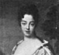Marie Adelaide de Savoie
-
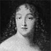Louise de la Valliere
-
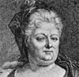Elisabeth Charlotte
-
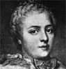Athenais de la Rochechouart
-
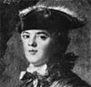Louise Elisabeth
-
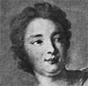Marie Anne de Nesle
-
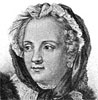Marie Leczinska
-
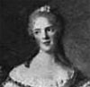Anne Henriette Marie
-
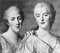Adelaide, Victoire and Sophie
-
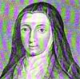Louise
-
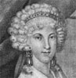Maria Luisa
-
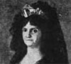Maria Luisa, Infanta of Parma
-
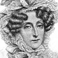Marie Amelie
-
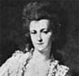Louise Marie Adelaide de Bourbon-Penthievre
-
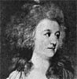Adelaide
Search OCLC WorldCat for this title.
Search Google Books for this title.